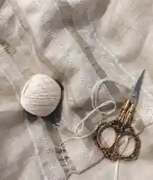
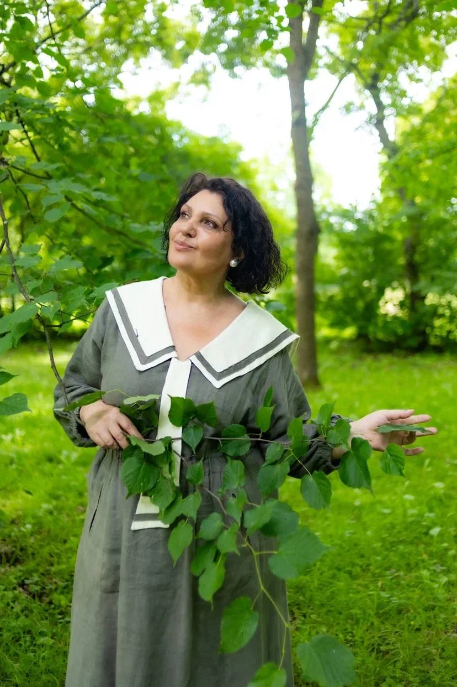
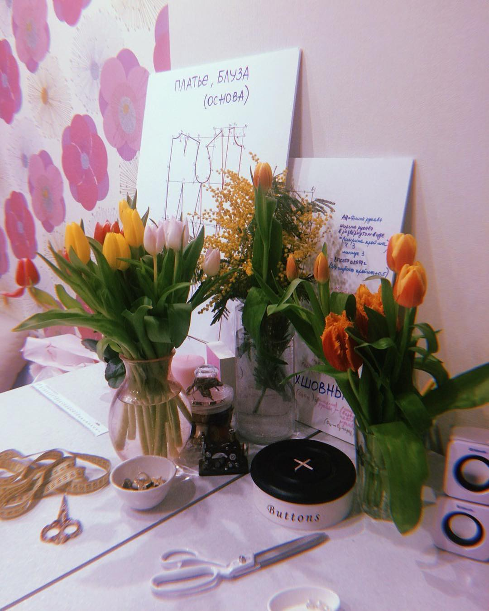
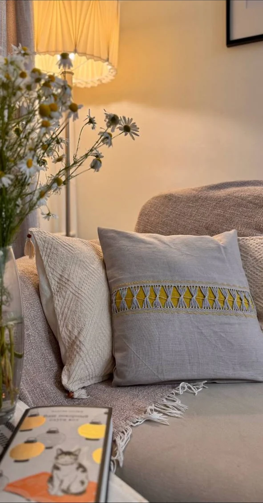
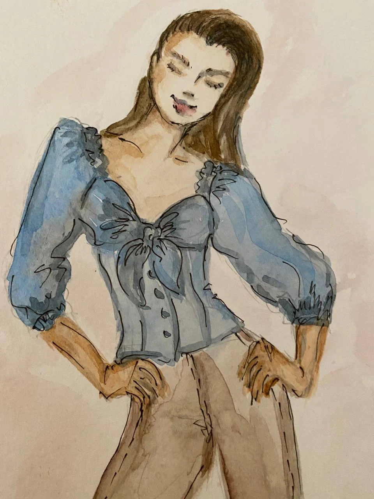
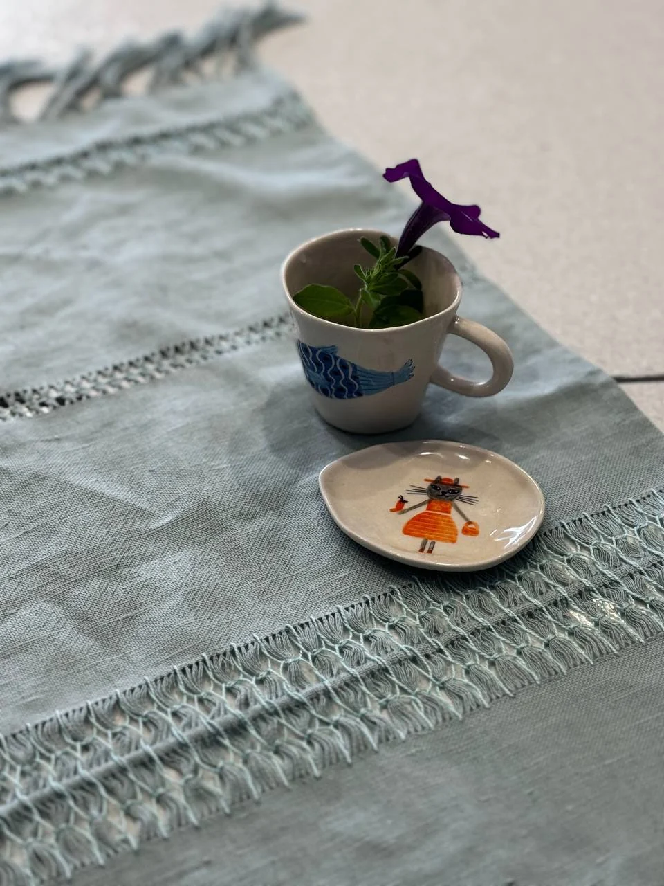

10 часов
15 000 ₽
+ 1 час в подарок
Итого 11 часов занятий
Выбрать пакетСшейте то, что давно задумали: платье, рубашку, брюки или даже пальто.
Можно начать с нуля или прийти к Надежде со своей моделью. На занятиях вы научитесь работать с выкройкой, тканью и посадкой.

Надежда Гусарова — дизайнер одежды, художник и преподаватель шитья
Надежда шьет больше 40 лет. В ее гардеробе есть все: от летних платьев до зимних пальто. Она сама выбирает ткани, придумывает фасоны, строит выкройки, шьет и вяжет.
К Надежде приходят и те, кто ни разу не садился за машинку, и те, кто давно шьет. Кто-то мечтает о первом платье, кто-то разбирается с посадкой жакета или пальто. Некоторые ученики занимаются у нее годами.
Надежда любит точность, красивую посадку и детали. А фасон, ткань и настроение вещи вы выбираете сами.

На занятиях вы сами выбираете, что хотите сшить. Вместе с Надеждой подбираете ткань, строите или корректируете выкройку, кроите, примеряете и доводите вещь до готового результата.
Можно прийти без опыта и начать с машинки и простых вещей. А можно принести сложную выкройку или недошитое платье, с которым нужна помощь. Занятия идут в вашем темпе.
1 500 ₽ за один час индивидуального занятия
Санкт-Петербург
Записаться на занятиеНапишите Надежде, что хотите сшить и есть ли у вас опыт. Она расскажет о расписании, месте занятий и материалах.

Планируете шить регулярно? В пакетах есть дополнительные часы в подарок.
15 000 ₽
+ 1 час в подарок
Итого 11 часов занятий
Выбрать пакет30 000 ₽
+ 3 часа в подарок
Итого 23 часа занятий
Выбрать пакет45 000 ₽
+ 5 часов в подарок
Итого 35 часов занятий
Выбрать пакетПлатья, куртки, пальто и костюмы. Все это ученики сшили на занятиях с Надеждой.
Училась у Надежды с октября прошлого года и до июля 25, закончила заниматься в связи с переездом в другой город. Надежда - отличный учитель, мастер своего дела. С ней было очень комфортно работать и совершенно не хотелось расставаться) Я рекомендую абсолютно всем ребятам, кто давно хотел научиться шить и по разным обстоятельствам откладывал.
Я очень благодарна Надежде Борисовне❤️, 3 месяца назад когда я пришла к ней я только умела делать сторчку на машинке😅, а сейчас начиная с абай до пальто умею, очень приятно и комфортно с ней учиться, спасибо Вам большое!!!
Мастер своего дела, очень приятный человек. Рекомендую однозначно👍👍👍
Спасибо большое Надежде за интересные и полезные занятия🧵👗✍! Настоящий профессионал👍💫
Мастер-классы по шитью, мережке и fashion illustration в Санкт-Петербурге.



Расскажите, какую вещь давно хотели сшить. Надежда расскажет, какой формат занятий подойдет для достижения ваших целей.
Написать Надежде в TelegramИндивидуальное обучение шитью · Санкт-Петербург